O que vamos fazer hoje
Conhecer as telas
Claude, ChatGPT e Gemini.
Trabalhar melhor
Prompt, arquivos, Drive e modelos.
Ver projetos reais
Dashboards, música, literatura e simulação.
Publicar seu trabalho
Sites, GitHub Pages e carrosséis.
Parte 1
As ferramentas
Claude
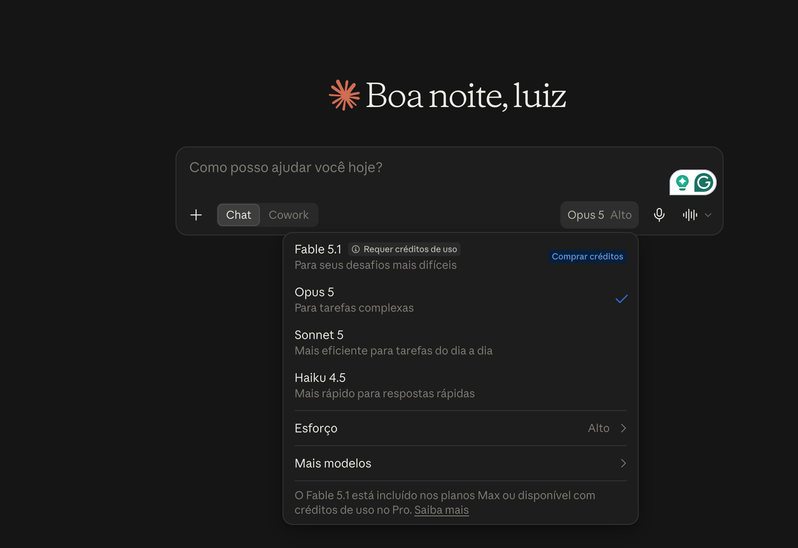
ABRIR CLAUDEProjetos, agendados e design
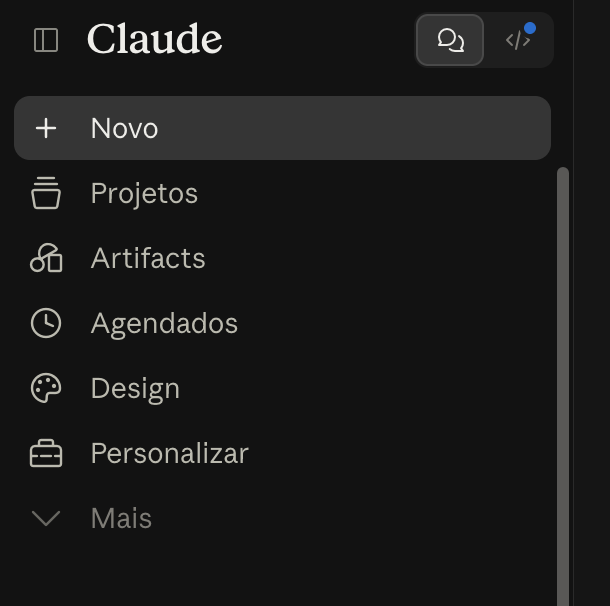
Artifacts e rotinas
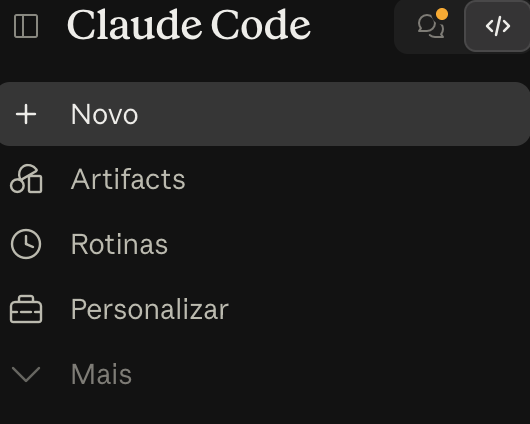
ChatGPT
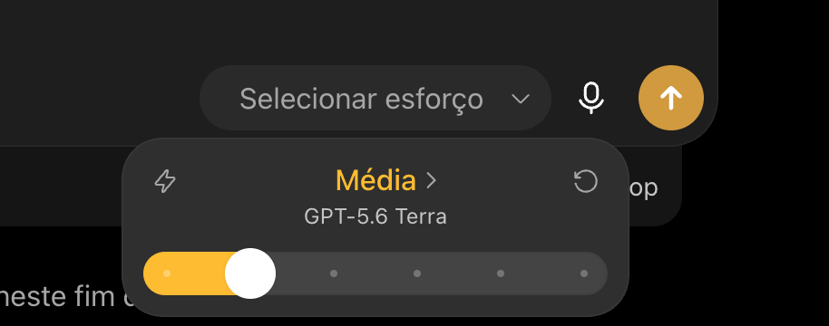
ABRIR CHATGPTProjetos, agendados, plugins e sites
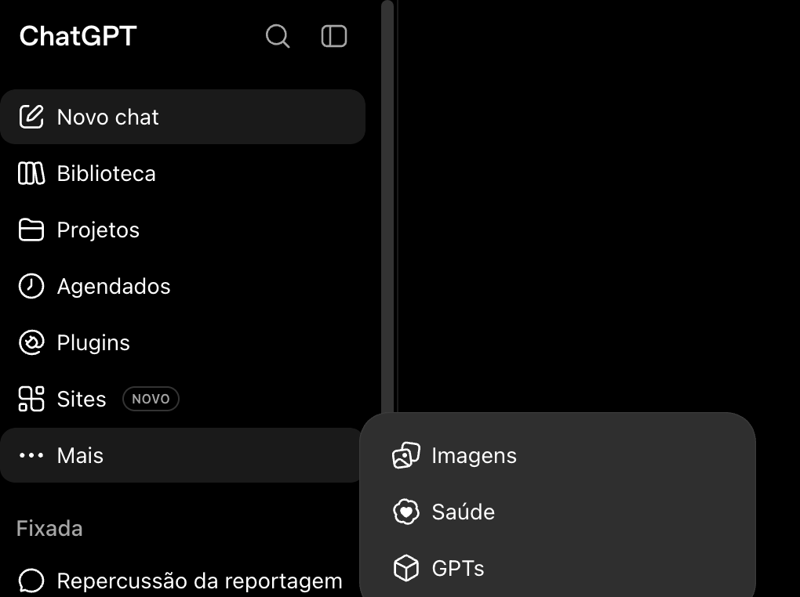
Como escrever um bom prompt
Planeje a tarefa como se você fosse executá-la.
Objetivo
O que você quer fazer?
Material
Qual arquivo, link ou contexto importa?
Etapas
O que a IA deve fazer primeiro?
Entrega
Como você quer receber o resultado?
Não precisa inventar um personagem. Clareza sobre a tarefa basta.
Arquivos no chat
Arraste o arquivo para a conversa
Documento pré-existente
Planilha
PDF
Transcrição
Imagem ou print
Depois, descreva a tarefa
“Leia este documento e liste os trechos que precisam de confirmação.”
“Compare os dois relatórios e aponte o que mudou.”
“Use este print como referência de estilo para um carrossel.”
Google Drive dentro da conversa

Como funciona
- Digite @GoogleDrive.
- Indique o arquivo ou a busca.
- Diga o que precisa fazer.
- Confira o resultado.
Exemplo: “Encontre a última planilha de gastos e resuma as abas.”
Qual modelo usar? Escolha suficiente, não o mais caro
ChatGPT
GPT-5.6
GPT-5.6 Sol
GPT-5.6 Terra
GPT-5.6 Luna
Claude
Fable 5.1
Opus 5
Sonnet 5
Haiku 4.5
Extensões do Chrome: usar a página que você já está vendo
Exemplo de pergunta
“O que é dito neste vídeo sobre Flávio Bolsonaro? Indique os minutos em que o tema aparece.”
Gemini: transcrição e resumo de reuniões gravadas
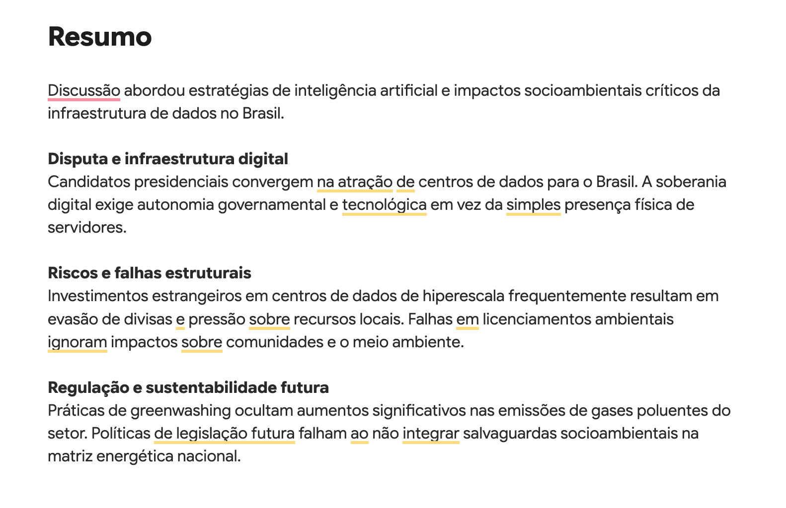
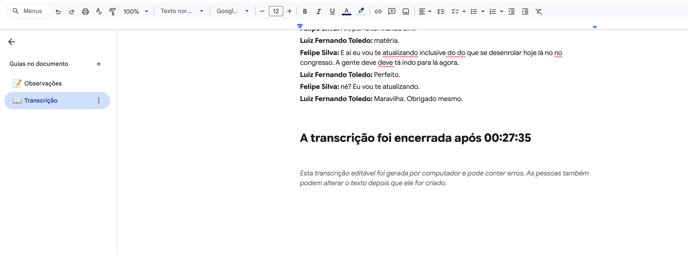
Outro atalho: transcrever e resumir uma reunião
Parte 2
Vibecoding: o que é, pra que serve?
Uma reportagem em forma de jogo
ABRIR O JOGORelatórios de fiscalização do trabalho escravo
Pesquisas eleitorais
Painel da LAI
Bússola do Congresso
Discursos presidenciais
Emendas parlamentares
Registro aeronáutico
Multas ambientais do Ibama
Compare músicas
ABRIR DIENASTYAjudar a ler ou pensar alto em ideias que poderiam ser executadas
ABRIR VALJIANSimulador de reações a reportagens

Antes de publicar
Um exercício para imaginar dúvidas, críticas e leituras diferentes antes da publicação.
ABRIR SIMULADORParte 3
E se eu quiser fazer um site?
Um site pequeno já pode mostrar seu melhor trabalho.
Opção 1: GPT Sites
ABRIR EXEMPLOPublicar um site no GitHub
O GitHub guarda os arquivos do seu site e publica uma página com eles.
Na dúvida, peça ao ChatGPT: “Me explique, passo a passo, como criar meu site no GitHub Pages. Nunca programei.”
Ele pode acompanhar cada tela e explicar onde clicar.
Caso Banco Master
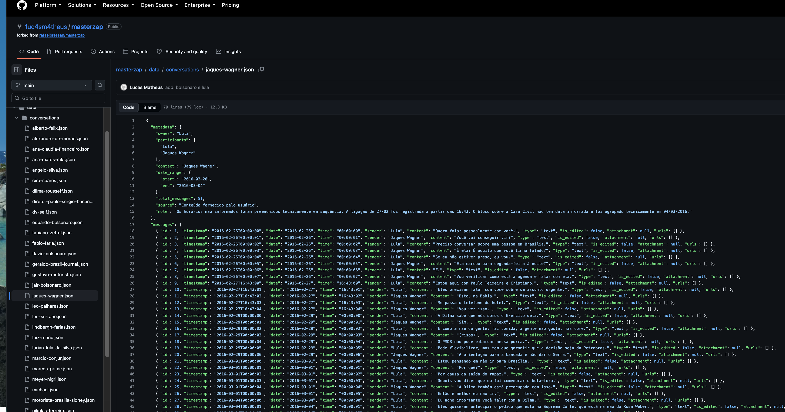
ABRIR REPOSITÓRIODivulgação do seu trabalho
Use a IA para transformar uma reportagem em uma sequência visual.
Claude Design e referências visuais
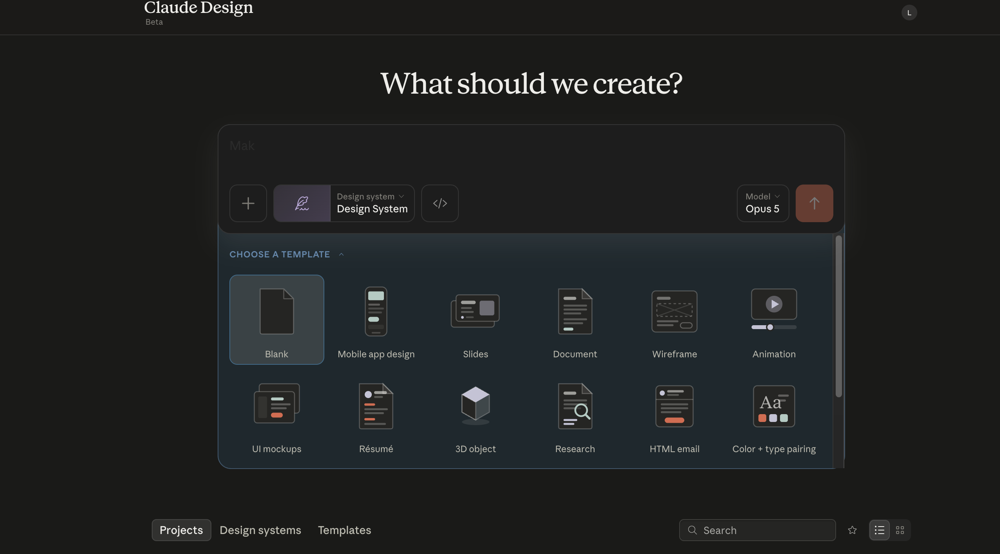
Uma referência pode virar ponto de partida
- Tire um print de um post.
- Envie para a IA.
- Diga o que quer aproveitar.
- Peça outra versão com seu conteúdo.
Plugins conectam o chat às ferramentas que você já usa
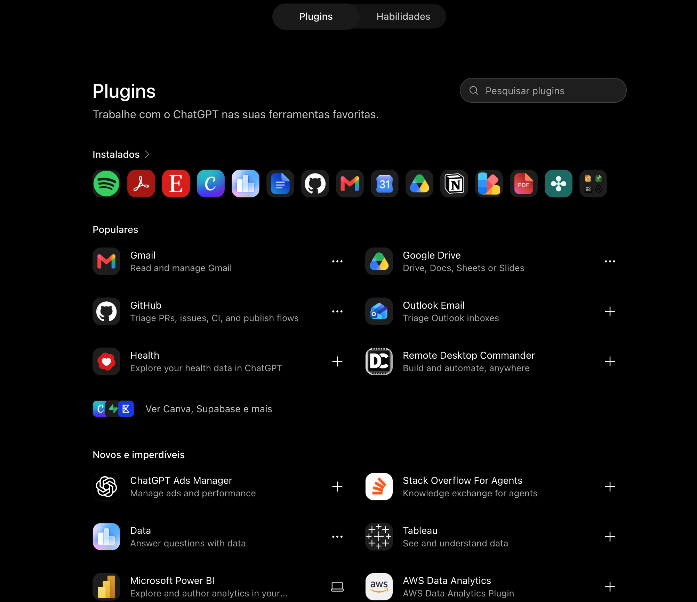
Google Drive para buscar arquivos. Gmail e Outlook para organizar e-mails. GitHub para atualizar sites. Notion para notas e documentos.
Habilidades são instruções prontas para tarefas específicas, como criar slides, analisar planilhas ou montar um site.
Tarefas agendadas
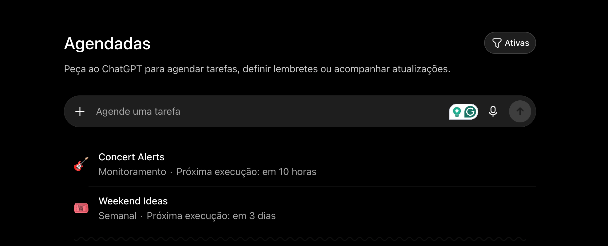
Peça para a IA lembrar, verificar ou acompanhar
“Toda manhã, verifique se há novas pesquisas registradas no TSE e me avise apenas se houver novidade.”
“Na sexta, me lembre de organizar as entrevistas da semana.”
“Uma vez por semana, procure atualizações sobre este tema e me traga só o que for relevante.”
Defina frequência, escopo e quando você quer receber um aviso.